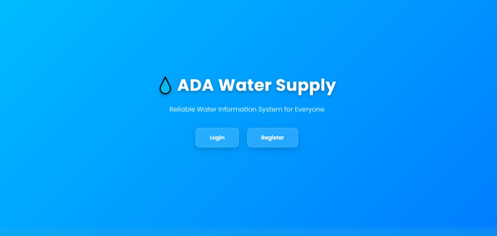
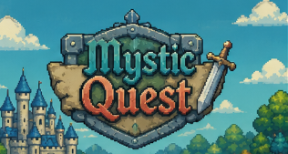

</>01
Frontend
Building responsive interfaces with a focus on clear layouts and usability.
Hello, I'm Rafael 👋
A fourth-year Information Technology student at Cebu Eastern College, growing into a full-stack web developer. I enjoy turning ideas into useful, thoughtful digital experiences.
01 const developer = {
name: 'Rafael',
focus: 'Full Stack',
passion: 'Building ideas'
};
06 while (learning) {
build();
improve();
}
A STUDENT WITH A BUILDER'S MINDSET
I'm Rafael Caburnay, a fourth-year Bachelor of Science in Information Technology student at Cebu Eastern College. My goal is to become a full-stack web developer who can build reliable, accessible, and useful applications.
I learn by making things, solving bugs, exploring new tools, and working through real project challenges. Right now, I'm developing my skills across frontend interfaces, backend logic, databases, and mobile app development.
A practical toolkit that keeps growing with every project. These represent technologies I've explored or used in coursework and personal projects.
Building responsive interfaces with a focus on clear layouts and usability.
Learning server-side development, application logic, and API workflows.
Connecting application features to data and using tools to test and improve them.
Exploring mobile app development, prototyping, and interactive experiences.
Projects that reflect what I'm learning, what I care about, and the problems I want to solve.
An AI-powered mobile application concept with gamified activities to support children's speech practice. The project explores guided pronunciation activities, progress tracking, and parent-supported learning.

A system concept for organizing water-supply operations, including inventory, sales, reports, and role-based dashboards.

A 2D game exploration focused on player movement, animation, and building a fantasy-inspired world.
Project descriptions reflect the work and concepts discussed during development. Update them as each project progresses.
04 / GET IN TOUCH
I'm always open to learning opportunities, collaboration, and conversations about web development and technology.
rafaelcaburnay234@gmail.com ↗